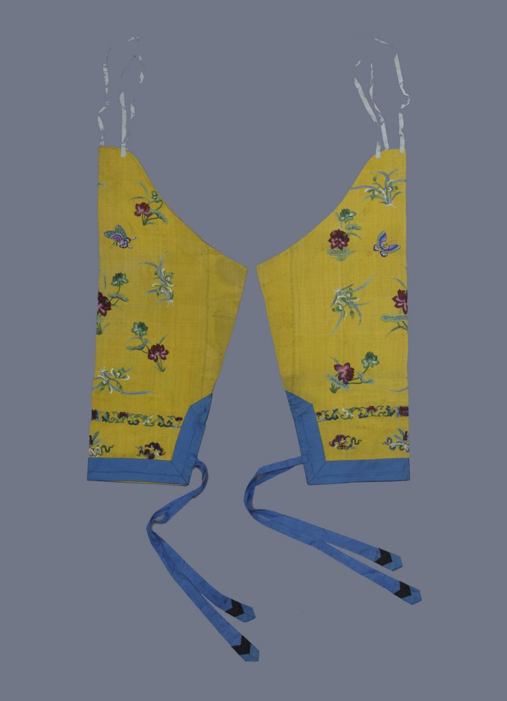
明黄色绸绣荷兰蝶单套裤
清朝
此为清代后妃夏季便服，裤腿式，内侧开裾，上锐下平。绣工规矩，纹样错落有致。
- 长: 75cm
- 宽: 23-33cm
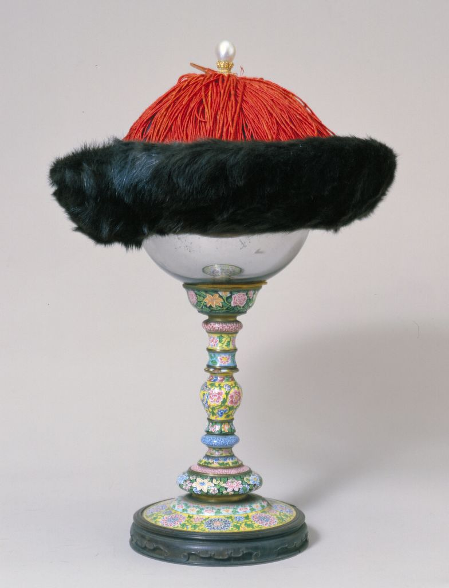
薰貂皮皇帝冬吉服冠
清朝
清，直径31厘米，高18厘米，沿宽9厘米。皇帝吉服冠。帽檐上仰，紫貂为之。
- 直径: 31cm
- 高: 18cm
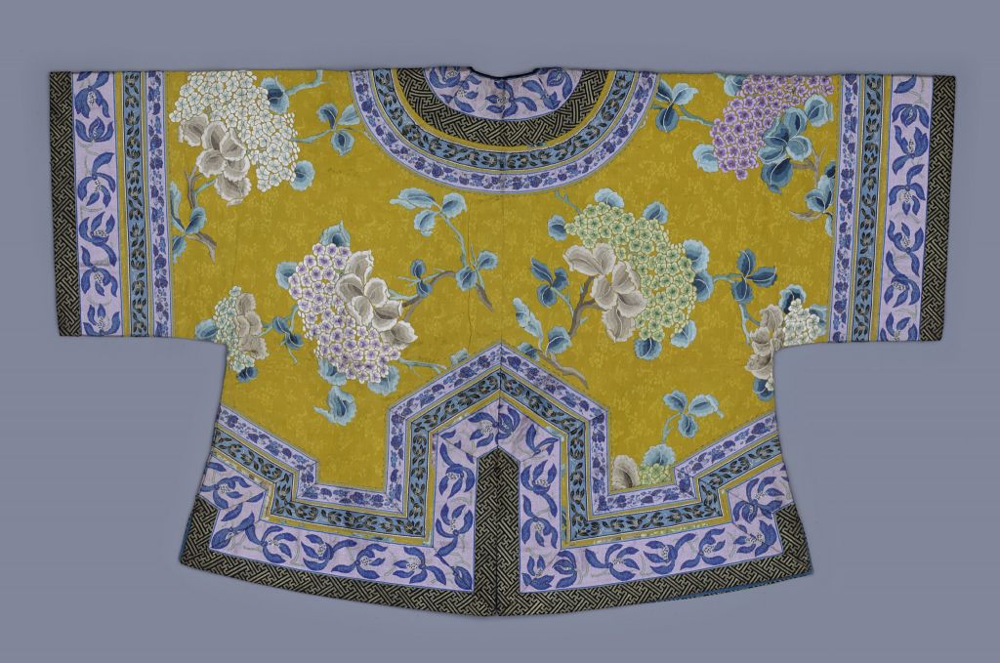
明黄色绸绣绣球花棉马褂
清朝
此为清代皇后在后宫燕居的便服，圆领，对襟，平袖，内衬宝蓝色素纺丝绸里。
- 身长: 73.5cm
- 两袖通长: 122cm
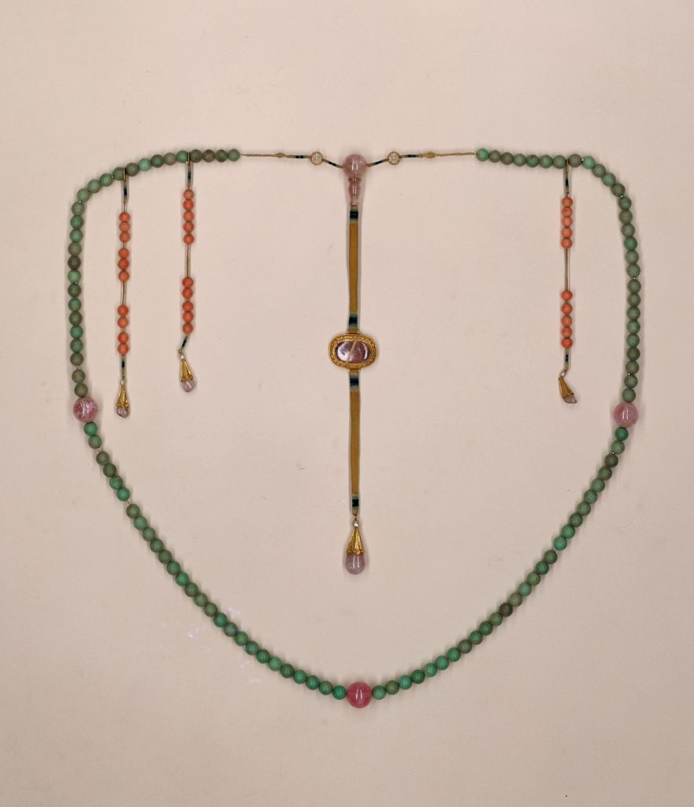
绿松石朝珠
清朝
朝珠由佛头、背云、记念和珠身组成，三颗碧玺结珠将朝珠四等份，共一百零八颗。
- 周长: 162cm
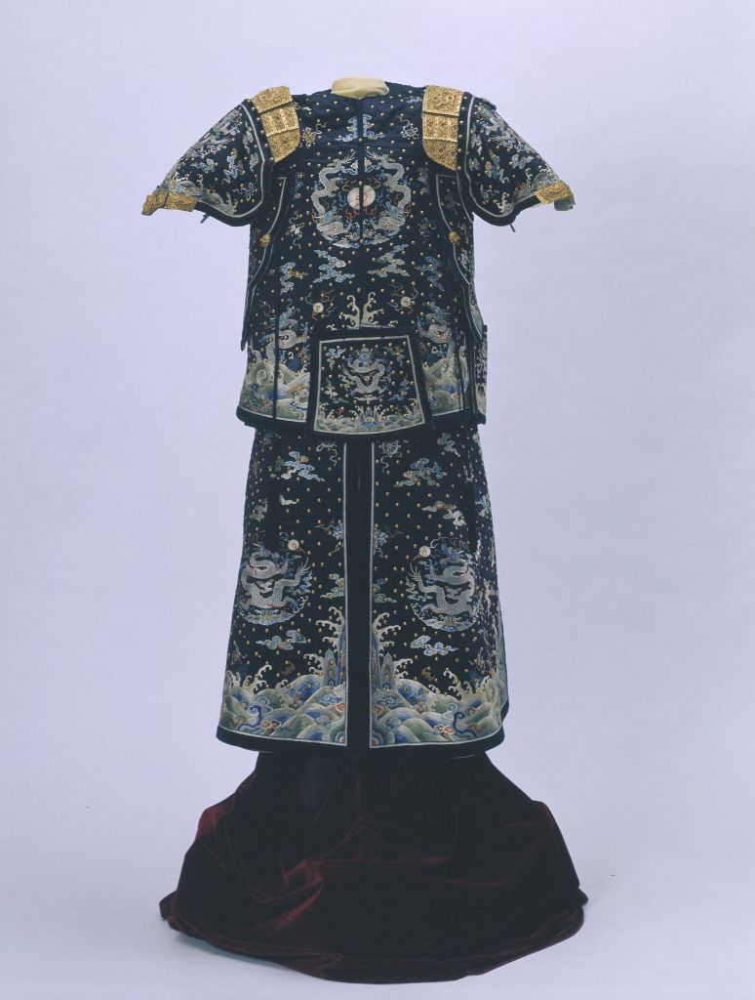
石青色缎绣彩云蓝龙绵甲
清朝
绵甲由甲衣和围裳上下两部分组成。间饰祥云、海水、如意、方戟等纹样。
- 上衣身长: 78cm
- 高: 92cm
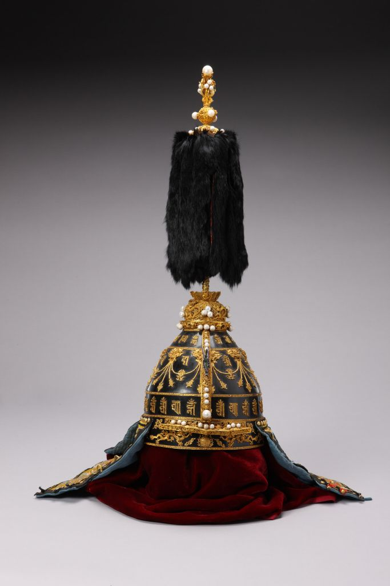
黑漆嵌金饰珍珠乾隆帝御用盔
清朝
乾隆帝御用盔，清乾隆，清宫旧藏。牛皮胎髹黑漆，胄体镀金梵文三重计四十四字。
- 高: 31.5cm
- 直径: 21cm
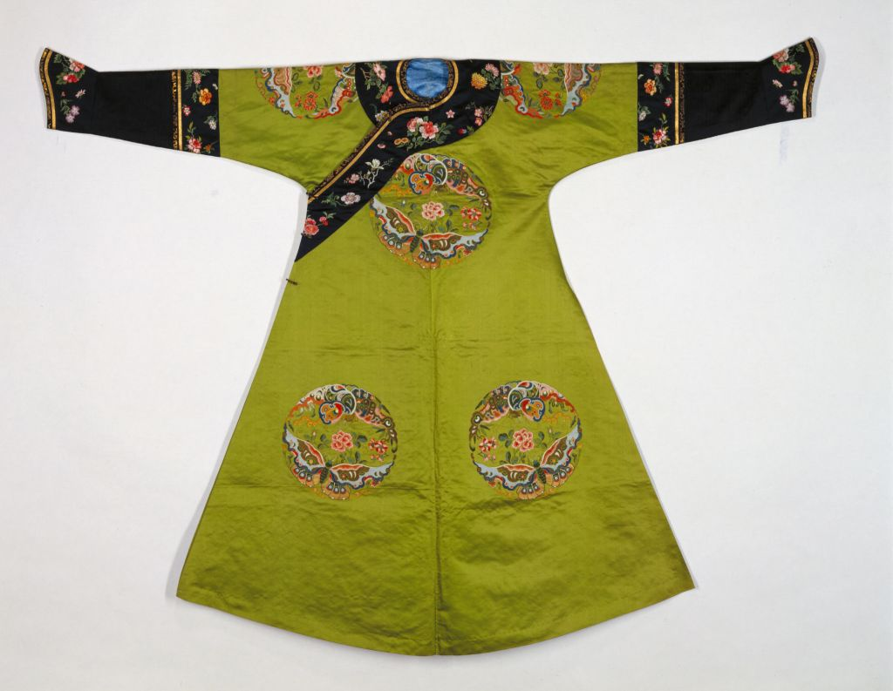
绿地喜相逢八团妆花缎棉袍
清朝
棉袍质地为七枚二飞素缎，圆领，大襟，右衽，马蹄袖，左右开裾。
- 衣长: 138.5cm
- 两袖通长: 188cm
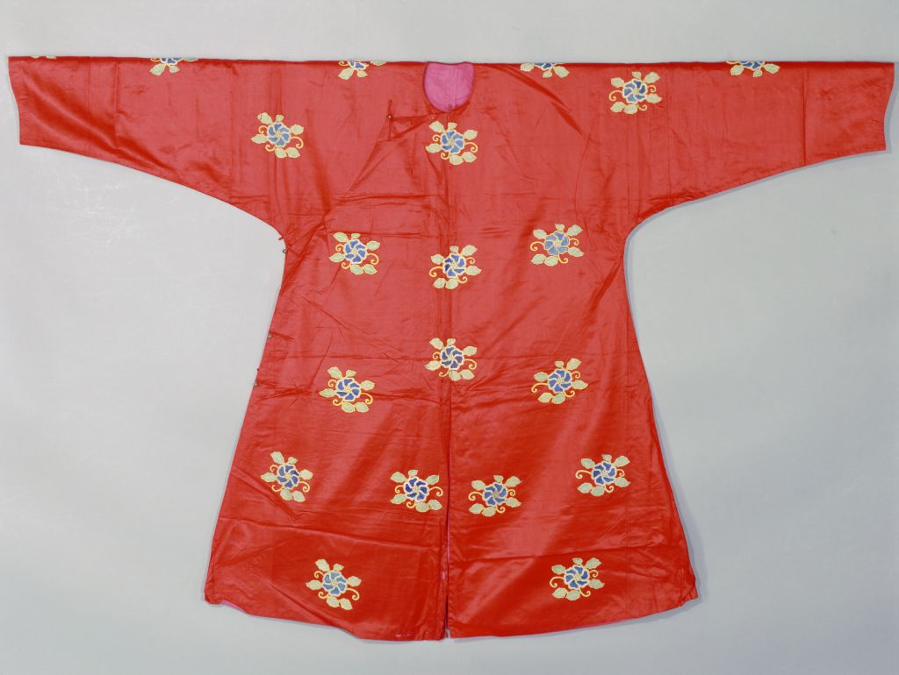
大红色绫缀葵花纹袷驾衣
清朝
大红色绫面，内衬粉色平纹布里，此袍为清代皇帝的执仪仗人员所穿。
- 身长: 192cm
- 两袖通长: 200cm
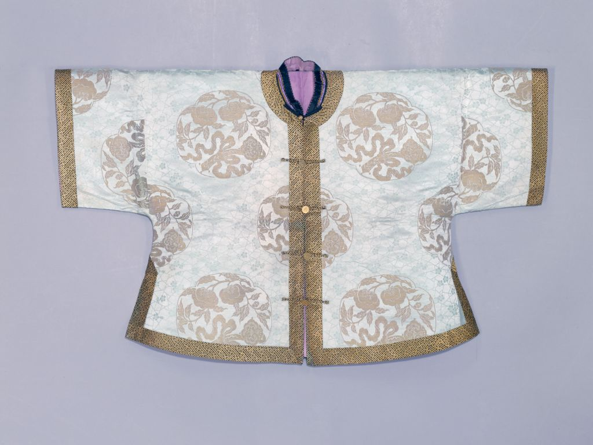
湖色团花事事如意织金缎绵马褂
清朝
作品运用衣服颜色与暗花纹样的搭配效果，显示出清代服饰装饰与设色构图的高超水平。
- 身长: 73cm
- 两袖通长: 120cm
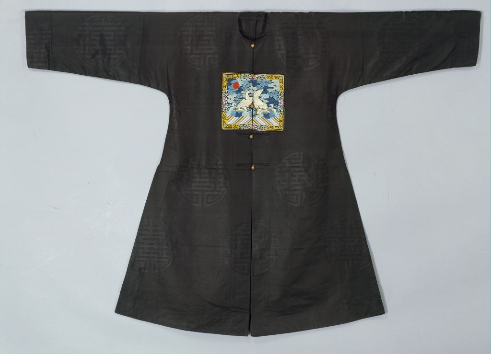
元青绸缀纳纱二方补绣鹭鸶补服
清朝
清，此为清朝文六品官服。补服为元青色团寿字暗花绸，织造细密。
- 身长: 22cm
- 两袖通长: 170cm
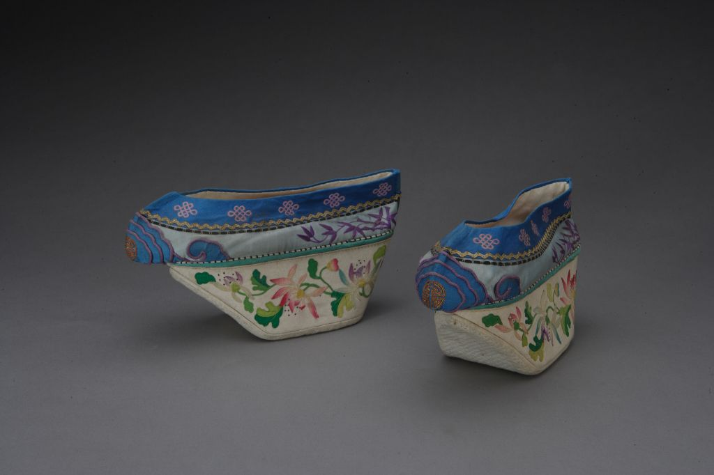
月白色缎绣竹子元宝底鞋
清朝
后妃女鞋依木底形状分元宝底鞋、高底鞋和花盆底鞋，此是中的一种。
- 高: 10.9cm
- 长: 23cm
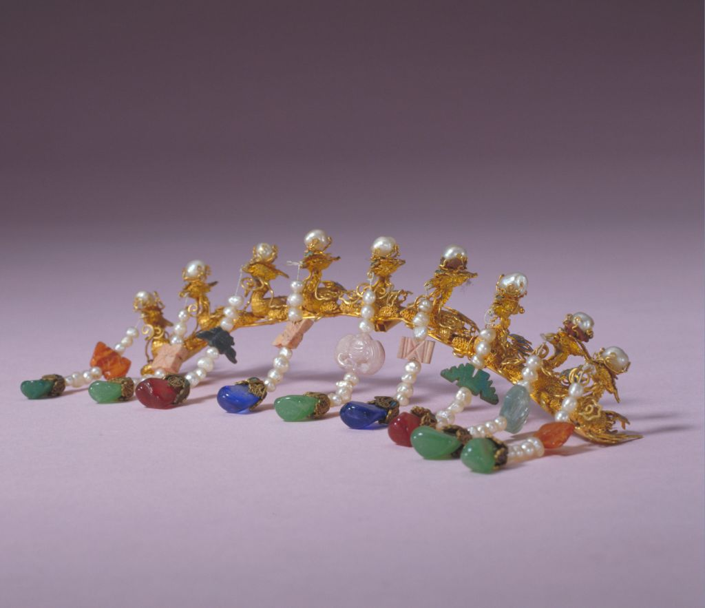
金累丝九凤钿口
清朝
钿口是清代后妃戴用的冠帽——钿子口沿上的装饰物，其纹饰多样。
- 长: 14.5cm
- 重: 47.5g